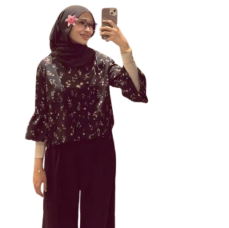

My name is Nurul Asma Binti Ahmad (matric number 2025763353), a student at Universiti Teknologi MARA (UiTM) Puncak Perdana Campus Shah Alam. I am currently pursuing a Bachelor of Information Science (Honours) in Information Systems Management (CDIM262) under the College of Computing, Informatics and Mathematics. Welcome to my personal website developed as part of the IMS458 Web Design and Development individual assignment, prepared for Associate Professor Dr. Farrah Diana Binti Saiful Bahry. The website was created on 30 May 2026 and submitted on 30 May 2026 as a report paper showcasing my web design and development skills.